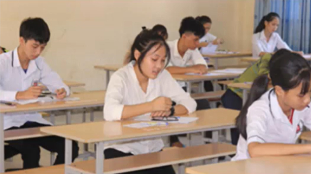

Nghệ An: 4/441 bài thi vào lớp 10 thay đổi điểm sau chấm phúc khảo
Tại Kỳ thi tuyển sinh vào lớp 10 Nghệ An năm 2019, sau khi công bố kết quả, có 441 đơn đề nghị chấm phúc khảo của thí sinh. Kết quả có 4 bài thi được thay đổi diểm số và đều tăng so với điểm cũ.